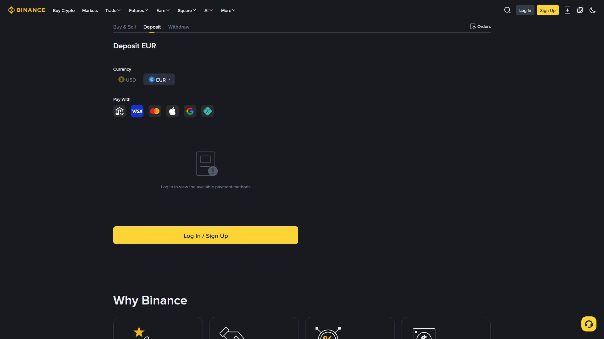

پیسے کے مسائل میں وقت سب سے قیمتی ہے — اور سب سے بڑی غلطی یہ ہے کہ آپ جو کر چکے اُس کا ثبوت محفوظ نہ رکھیں۔ اس باب میں ہر عام مسئلے کی وجہ، فوری عمل، اور درست راستہ بتایا جائے گا۔

ترتیب سے جانچ:
| وجہ | کیسے پتہ چلے | حل |
|---|---|---|
| Networı غلط | بھیجنے والا نیٹ ورک ≠ بائننس نیٹ ورک | فوری بائننس Live Chat؛ ری کوری ممکن یا نہیں |
| Memo/Tag غائب | وصول کنندہ نے Memo لازم کہانی ہو | TXID کے ساتھ Support Ticket |
| غیر تصدیق شدہ | Blockchain پر Confirmations پوری نہیں | بلاک پر TXID دیکھیں، انتظار کریں |
| پتہ غلط | Address کسی اور کا | فوری رپورٹ؛ عموماً ناقابل واپسی |
| بھیجنے والے کی طرف Pending | سینڈر نے ابھی بھیجا نہیں | بھیجنے والے کا بلاک اسکرین دیکھیں |
فوری عمل:
1. TXID (Transaction Hash) لے لیں — یہی سب سے اہم ثبوت ہے
2. Blockchain Explorer (etherscan/tronscan وغیرہ) پر ڈالیں
- Confirmations کتنے؟ → انتظار
- Success مگر پہنچا نہیں؟ → Memo/Network مسئلہ
3. بائننس → Support → Deposit Problem → TXID کے ساتھ بھیجیں| وجہ | تفصیل | حل |
|---|---|---|
| Address Whitelist | نیا ایڈریس شامل کرنے پر عام طور پر Hold Period (اکثر ~24 گھنٹے) | منظور کے بعد دوبارہ کریں |
| OTP/2FA تصدیق نہیں | آخری مرحلہ مکمل نہیں | ای میل/2FA لنک پر کلک کریں |
| New Device | نئے ڈیوائس پر عموماً تحفّظاتی تاخیر | سیکیورٹی الرٹ کا انتظار/تصدیق |
| Blockchain Congestion | نیٹ ورک بھیڑ | فیس/نیٹ ورک کے مطابق وقت |
| KYC/Account Review | اکاؤنٹ ریویو میں | Reason کا پیغام پڑھیں، پھر Support |
اگر وائیدراول Fail ہو اور رقم "Available" نہ ہو:
- کچھ منٹ انتظار کریں (ریورس ہو جاتی ہے)
- اگر نہ آئے: TXID/Order ID کے ساتھ Ticketنشانات اور درست عمل:
1. اگر آپ نے ادائیگی کی مگر سیلر "Release" نہ کرے:
→ Order میں "Appeal" (اپیل) دبائیں
→ بینک/ایزی پیسہ کی تصدیق شدہ رسید (Screenshot) اپلوڈ کریں
→ بائننس ریویو کرے گا (عموماً کچھ لمحہ سے 24 گھنٹے)
2. اگر دوسرا فریق Escrow سے باہر ادائیگی کہے:
→ ہرگز نہ کریں؛ Order میں ہی رہیں → Cancel/Appeal
3. ادائیگی کے وقت اکاؤنٹ نمبر میچ نہ ہو:
→ ادائیگی نہ کریں؛ Order Cancel کریںاصول: P2P میں ادائیگی Escrow Order کے اندر ہی ہوتی ہے۔ "Telegram/WhatsApp پر بات کریں" کہنے والا محتاط ہو یا دھوکے باز۔
"پیسے کے مسئلے کا پہلا علاج ثبوت ہے، دوسرا صبر، تیسرا درست Support۔" اصول: (1) ہر ٹرانزیکشن کا ID محفوظ، (2) نیٹ ورک/Memo دو بار جاچیں، (3) صرف آفیشل راستے سے شکایت۔